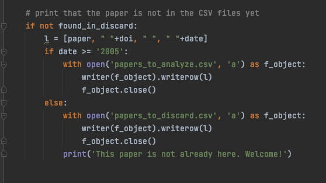

Up to now I could verify the validity of 4 among applications and libraries:
For what concerns the gold standard I have made progresses on three aspects:
The next step, after the selection of the final format, will be the creation of the conversion algorithms between different file formats.
I have made a final check of the software retrieved up to know. From 21 retrieved fromt he literature review:
Up to now the valid software retrived are:
The first of the tasks necessary for the creation of the gold standard I have taken into consideration is the selection of the metadata. At the moment I have considered 5 kind of publications: article, book, book chapter, proceeding and preprint. I have considered in all the cases the average of the reported metadata, but in some cases I have considered also some metadata which were not in all the kinds of publication but that were represented by similar categories in all of them. For instance, in the preprints some kinds of publication have the DOI, some others the URL, some other both of them. But since they all represent an identification of the online resource I have considered them as an alternative (DOI ∨ URL). The remaining publication types will be updated by the next week.
The final numbers of the papers accepted/discarded is changed because of the full-text reading:
I had not enough time to verify whether all the retrieved software are available or not. Thus, when all the software will be analysed and I'll be sure about which of them are valid, and which are not, I will publish the CSV files in a folder on this GitHub repo.
There are a few software which have not an available link to a repository or a website of the resource itself (either because it is not provided or because it is not working). I considered them too since there is a description about what they consist of and how they work in some papers. In order to deal with the missing links, I considered the software as invalid and I have put in the "repository" cell "N.A." (non available).
Finally, I have corrected the mismatching between the method I have actually followed in these months and the one described in the protocol (the search with keywords has been highlighted as optional and I have added the column of the repository link in the file "Software").
The literature review is finished with the following numbers:
Following the protocol instructions, I am looking for the full text of the papers. Some of the ones accepted for the abstract have been discarded by looking at the full text. Contemporaneously I have created the two files reported as the last step of the protocol: "papers", where the accepted papers are reported in association with the software they describe, and "software" where the software are listed together with their repository/interface link and their validity status. For each paper accepted because its full text is in line with the standards of this research, it is reported in "papers", and if the software is not already present in "software", it is added there too. This step is completely manual but I hope that by working parallely on these three (four counting also papers to discard) files, the work will be a little faster.
The literature review is proceeding with the following numbers:
The literature review is proceeding with the following numbers:
Some of the remaining papers are actually well-known and widely reused since they have been cited more than 100/200 and sometimes 500 times (so for each of them I have to check 100 articles). Also, in most cases the number of references of these widespread papers is quite high too (from 30 to 50/60). Therefore, I am trying to use as much as I can the python function for retrieving the papers in Crossref and checking the respective abstract but I am spending and I'll be spending a lot of time too in manually checking the remaining abstracts.
The literature review is proceeding with the following numbers:
I have added in the protocol a note in which there are explained the two ways through which I have tried to fastly reduce the total number of papers waiting to be analysed (the automatic check of the abstracts and the search by keywords). They have been added in the shape of a suggestion to the readers/reusers. The technique of the keywords was really useful in order to remove large quantities of non relevant papers. Now I am focusing on a research made paper by paper since it seems that most of the remaining will require a little more attention than the others in order to define whether they are relevant or not.
The literature review is proceeding with the following numbers:
I am continuing the strategy started the previous week by searching for the papers whose titles include certain words related to topics not directly connected to my research topic. This week I was able to reduce of only 47 papers, but I am pretty sure that I can find oter relevant keywords in order to easily find other non relevant papers.
The literature review is proceeding with the following numbers:
The function I created in order to retrieve the abstract was not as helpful as I hoped. Indeed on 592 total papers, 210 were not searchable on Crossref because they were not provided with a DOI and only 50 abstract were found. On those 50 papers I proceeded with a keyword analysis and I was able to discard 15 of them. But since it seemed to me that there was not enough data in order to decide in an automatized way whether the remaining papers were admissible or not, I decided to continue reading the abstract manually as I was doing before. Nonetheless, by working on specific keywords like 'covid', 'knowledge graph', 'bibliometrics' (presumably not connected to the research topic), I was able to retrieve a discrete number of papers (154) which could be discarded on the basis of title, subtitle, keywords and of a brief reading of the abstract.
The literature review is proceeding with the following numbers:
In this week, the most relevant aspect of the research is that the number of newly retrieved papers is slowly decreasing while the number of rejected papers is exponencially incresing and the number of accepted papers is almost stable.
The literature review is proceeding with the following numbers:
The literature review is proceeding with the following numbers:
The section through which I can get the papers cited by the current ones (the references) has been completed and it is revealed to be helpful in order to retrieve as many new papers in an automated way as possible.
The literature review is proceeding with the following numbers:
In the code used to search the citing papers through API requests I have added a section through which I can get the papers cited by the current ones (the references). It is not already finished but by today it should be. In this way I have the possibility to fasten up a little more this part of the literature review.
The literature review is proceeding with the following numbers:
From the previus meeting the most relevant change is the creation of a function which retrieved information from the API of COCI from OpenCitatiosn. The function is able to retrieve the DOIs of the citing papers by sending a request to the COCI API and the respective contextual information from Crossref, so that it is able to automatically create the line to insert in the csv files.
Starting from the first seed paper I started processing it like it is described in the protocol. Firstly, I have checked its integrity with respect to the general and more specific parameters; then, I have transferred it in papers_to_keep. Finally I proceeded with the backward and forward search. In order to do so I have retrieved a lot of papers, in particular from the backward search and from the forward search, in particular thanks to Google Scholar.
Also, since it seems like there will be lots of papers listed in all the three CSV files at a certain point (some to be fully read, some other still to be generally checked) I have tried to implement an semi-automatic way to check whether the new papers retrieved are already present in the CSV files or whether they have still to be added. Also this small software includes a part through which if the name or the ID of the paper considered ar not already listed in the CSV, they are automatically added to papers_to_analyze. But whether the data in which they have been written in smaller than 2005, then, they are added to papers_to_discard. And finally, the rest of the string necessary in order to identify the papers are added manually.
This is a piece of the code created in order to check the existence or not of the currently considered paper. It is repeated for all the three existing files:
Then, this is the snippet which creates the new line in the CSV: if the paper could not be found in the CSV files, then, if the date is bigger than 2005, it is added to papers_to_keep, otherwise to papers_to_discard.
On Protocols.io I've updated the changes required in order to make more compliant with the general requirements for an open protocol:
On the other hand, since the protocol is almost finished I have started with its application:
On Protocols.io I've updated the changes required in order to make more compliant with the general requirements for an open protocol:
On Protocols.io I've updated the changes required in order to make more compliant with the general requirements for an open protocol:
Converting unstructured data, i.e. data coded in a format which is not structured in a predefined way, such as PDF, into structured data, i.e. using clearly defined types of data organised in a structure, has several advantages. One of the most interesting consequencies is the fact that these data become easier to search, both for humans and for algorithms. Even if there are many softwares which have this objective, through a sistematic review of the existing literature it is possible to understand whether there is/are a/few software(s) whose features allow it to have better performances than the others in order to carry out a specific task in this context. This protocol shows the methodology followed in order to make a sistematic review of the literature regarding the software dedivcated to the extraction and manipulation of citations from papers in PDF file format. Thus, the objective of this research, which is reflected on the flow of the literature review methodology, is that of retrieving the most suitable software for the specified purpose, i.e. retrieving and manipulating citations from PDF files.
General IC for papers (all of them are mandatory):
IC for screening procedure on papers (one of them is enough, but the more the better. This part should be still quite inclusive, if in doubt keep the article)
IC for the papers full text:
Useful information for the research:
Step 1 (seed papers):
Step 2 (keywords):
This step directly follows the first one with a complementary perspective. Indeed, it is able to fill the eventual gap of papers and publications left by the previous step. At the end of this second step, all the available documents should be retrieved.
Step 1:
Create 2 files (“useful_links”, “not_useful_links”). Both the files must be created on a digital file so that clusters of topics can be created. Indeed these files have a double objective:
Step 2:
For each of the papers in “Papers_to_keep” read its full text. We outline three possible cases derived from the possible outcomes of the verification whether the articles include the points listed in IC for the papers full text or not.
NVivo (tool for data extraction and coding) (?)
Some of the features that differentiate a systematic review from a conventional expert literature review are:
The articles proposes a structure for the research flow which is summarized by the following list:
In this moment the relevant part I am interested in is "planning the review". Indeed the first step in order to carry out a sistematic review, as stated in both the previous articles, is developing a protocol with some specifications defined in the articles themselves. Then, once finished, the protocol should be validated.
A systematic literature review is necessary in order to obtain information about the softwares which allow data extraction from PDF file formats. The part of the text on which this software will be applied is the citations one. Therefore the objective of this research is that of retrieving the most suitable software for that purpose.
Which is the software whose features are the most suitable to retrieve references textual information from PDF files and translate them into structured data?
IC for search strategies:
IC for screening procedure:
Step 1 (seed papers):
Step 2 (keywords):
Step 3 (first generic inclusion criteria):
Step 4 (stop criterion):
From the reading Construction of the Literature Graph in Semantic Scholar I have obtained information about a possible generic structure to give also to my work:
From the notions reported in the article it has come out that there is in certain cases the need to make use of more than one software, each one for different purposes. In the cited article, for instance the writers make use of 3 different ones in order to extract the titles, citations and authors: one to tokenize the text, one for embedding the lowercase tokens and another to used the transformed data and carry out the final task (recognition of the paths). From this article I have understood that I may try to look for a software with more features which allow to use less other external softwares to carry out the task.
GROBID definition:
The following functionalities are available:
GROBID uses optionally Deep Learning models relying on the DeLFT library, a task-agnostic Deep Learning framework for sequence labelling and text classification.
The advantage of Grobid from a computational point of view, is that it is available in three different programming languages Python, Java and Javascript (Node.js). All these clients will take advantage of the multi-threading for scaling large set of PDF processing.
A problem is that there is no certainty that it works on Windows system.
Excite is a project composed of different but dependent subsections:
The language is mainly python and it has the advantage of having in itself all the passages required to test and use the software (it seems that it does not require external systems to make parts of the job like with ScienceParse).
Here are the related bibliographic papers (which I have to read to better understand how Excite works).